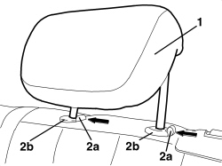

7050B12 REAR SEAT HEAD RESTRAINT - R.R.
- Path
- Procedures > 70 FITTINGS > 7050 REAR SEATS > 7050B REAR SEAT HEAD RESTRAINT/ARMREST > 7050B12 REAR SEAT HEAD RESTRAINT - R.R.
- Kind
- repair procedure (removal / refitting; the operation number is the code)
- Applies to
- all engines; all production periods
- Interactive page
- https://sloeber94.github.io/elrnDB-aBrrSpdr/en/#/946002668
Applies to: all engines; all production periods
 Removing
Removing
 Refitting
Refitting1. Raise the head restraint until it is in the end of travel position.
2. Press the retainers (2a) together and extract the head restraint from the guides (2b).

Applies to: all engines; all production periods
Refitting
Removing- Check that the head restraint is not damaged.
- Fit the head restraint in the guides until it is in the end of travel position.
- Press the retainers and fit the head restraint.
- Check that the head restraint is working.
Topics that link to this page (7)
- S057 NOISY REAR SEAT HEAD RESTRAINT
- 7050B08 GUIDE BUSH FOR HEAD RESTRAINT (ONE) FOR REAR SEAT - R.R
- 7050D34 TRIM FOR LEFT REAR SEAT BACKREST (TWO SEATER) - R.R.
- 7050D35 LEFT REAR SEAT BACKREST COVER (TWO SEATER) - R.R. WITH BACKREST REMOVED
- 7050D36 TRIM FOR RIGHT REAR SEAT BACKREST (INDIVIDUAL) - R.R.
- 7050D37 RIGHT REAR SEAT BACKREST COVER (SINGLE) - R.R. WITH BACKREST REMOVED
- 7050D57 TRIM OF REAR SEAT ARM REST RR WITH ARM REST REMOVED